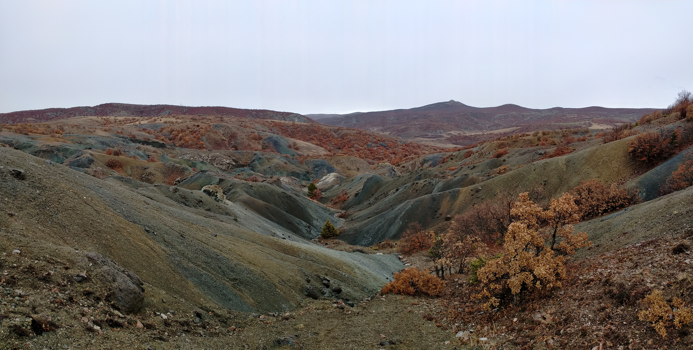

Yozgat İl Müdürlüğü ile imzalanan mutabakat muhtırası; DOKA'nın yerel işe alım ve tedarikçi katılımını önceliklendirme taahhüdünü resmileştirdi.
28 Kas 2024

DOKA Madencilik, Yozgat İl Müdürlüğü ile bir Mutabakat Muhtırası imzalayarak bölgedeki arama faaliyetleri başlarken yerel istihdam ve toplumun ekonomik katılımına yönelik taahhütlerini resmileştirdi.
Mutabakat muhtırası; DOKA'nın arama aşamasında ortaya çıkacak tüm saha düzeyindeki operasyonel ve destek rolleri için Yozgat ilinden nitelikli adaylara öncelik tanıyacağı bir çerçeve oluşturmaktadır.
DOKA yönetimi, Yozgat mutabakat muhtırasının şirketin üç arama sahasının tamamındaki toplum ilişkilerine yönelik daha kapsamlı yaklaşımını yansıttığını belirtmiştir. Kırşehir ve Bayburt için de benzer çerçeveler geliştirilmektedir.